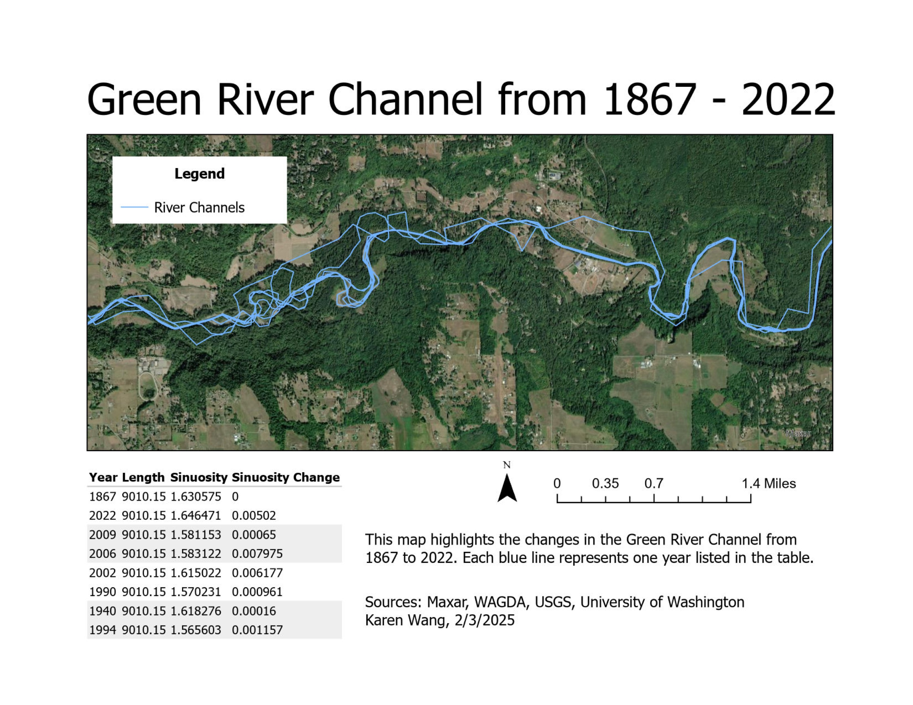

Green River Channel from 1867 to 2022
Karen Wang
Description
This map shows how the Green River’s path in Washington state has changed over time, from 1867 to 2022. Using historical topographic maps, aerial images, and modern satellite imagery, I manually digitized the river channel for eight different years as polylines. After creating the line features, I calculated each channel’s length and sinuosity to track how much the river's shape had changed. This highlights how much the river meandered over time, and how that sinuosity changed at different rates. This project taught me how to digitize features, calculate geometry, and interpret how rivers evolve over long time periods.